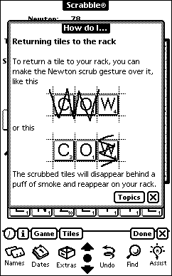

|
Digital Objectives
|
||||
|
The Newton has a number of standard editing gestures which I felt Scrabble should support. Although dragging is not used very much in the Newton interface, desktop computer users tend to expect that they can drag on-screen items. So the letter tiles can be dragged from the rack to the board and back again. Tapping one or more tiles will select them; tapping the board will then move the selected tiles to the indicated square. Most users ended up using this method to move the tiles, since dragging on a touch screen is tricky (pulling away from the screen, even for an instant, ends the drag operation prematurely). The Newton recognizes horizontal and vertical gestures, so making an up-and-down gesture on the board will arrange the highlighted tiles in a vertical line. There is a standard gesture used for selecting text and graphics which will also select tiles on the board. The famous Newton scrub gesture, in which the scrubbed-out items disappear in a puff of smoke, can be used to return tiles on the board to the letter rack. Finally, the Newton’s much-maligned handwriting recognition is also integrated into Scrabble. Writing a letter on the board will send the appropriate letter sliding out from the rack to the indicated square (if the letter is recognized correctly, that is). |
 |